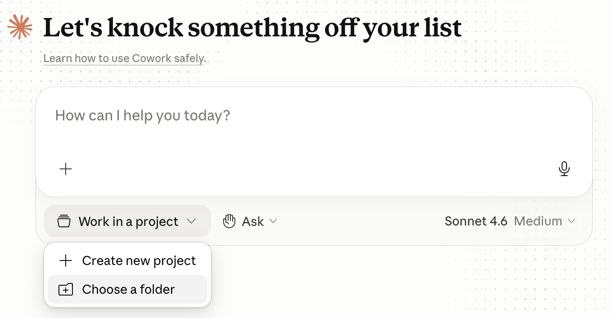
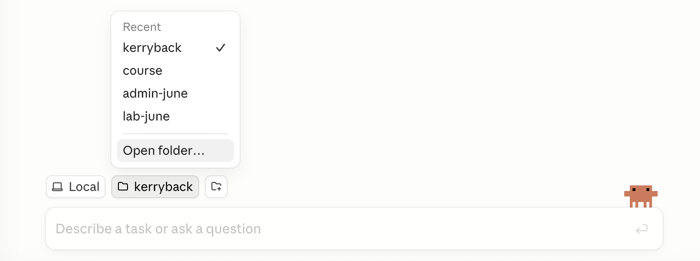
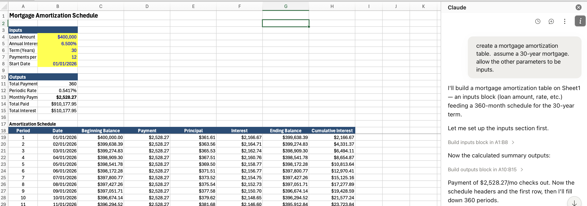

Week 1: Introduction
Tue Oct 6, 2026
One
How to work with AI to do financial analysis
Two
How custom chatbots and AI agents work
Three
How to work with AI to build custom chatbots and AI agents for financial analysis
Item #1 is essential today. Item #2 is valuable today.
Four elements, 25% each. The first three are group projects.
One
AI cost of capital exercise: calculation, visualization, report generation
Two
Cost of capital app
Three
Valuation Skill for Claude
Four
Seated exam with AI allowed
For each group project the deliverables are a chat, app, or agent, and a two-page Word doc explaining development and use.
“[Alfred] removed about 90% of the manual effort that once went into preparing our weekly financial review. We used to spend hundreds of hours preparing 100+ slides for a Monday meeting.”
Marie Myers, CFO, Hewlett Packard Enterprise (Fortune, Feb 2026)
Text is cut into pieces from a fixed vocabulary before the model sees any of it.
"The cat sat on the mat" -> ["The", " cat", " sat", " on", " the", " mat"]
"Unbelievable" -> ["Un", "believ", "able"]Common words stay whole; rare and long words break into pieces. A typical vocabulary runs to about 100,000 tokens.
Numbers break on the same rules, which have nothing to do with arithmetic. 13,963,378.65 reaches the model as a handful of unrelated pieces.
Each token is associated with a vector, meaning a list of numbers. So, a sequence of text becomes a sequence of lists of numbers.
Each token is a list
“king” becomes a list of 4,096 numbers. “queen” becomes a different but somewhat similar list of 4,096 numbers.
Tokens used in similar contexts end up near each other.
The space is mostly empty
There are far more possible vectors than there are tokens, so most points in the space name nothing.
The prediction can land between tokens. The “closest” token is usually selected but not always (so LLM output is somewhat random).
Given the tokens (lists of numbers) so far, predict the token (list of numbers) that comes next. That is the entire operation.
Everything a model appears to do — answering, summarizing, writing code, refusing — is that one prediction, repeated.
📝
Words
Input text
🔤
Tokens
Text split into units
📐
Vectors
4,096 numbers per token
🧠
Neural Network
Billions+ of parameters
📊
Vector
Output vector
🎯
Token
Predicted next token
The idea
\(y = 4x\) is a function. The 4 is a parameter.
Change it to 3 and you have the same structure with different behavior.
The scale
Same idea with perhaps trillions of parameters, arranged as a transformer — the architecture published by Google researchers in 2017.
A model trained only to predict the next token continues your text. It does not answer a question.
<|user|> your question <|assistant|>.<|assistant|> is a useful reply.The mechanism did not change. What changed is which continuation is the likely one. GPT became Chat-GPT in 2022.
| When | What |
|---|---|
| 2017 | Google researchers publish the transformer (“Attention Is All You Need”) |
| 2020 | GPT-3 (OpenAI) shows abilities that appear with scale |
| 2022–2023 | Online chatbots. You typed, it typed back |
| 2023–2024 | Code execution and web search arrive |
| 2025 | The serious versions move to the command line, reading and writing files on your own machine. DeepSeek R1 appears |
| 2025–2026 | That command-line capability is wrapped back into an app |
| 2026 | Agents that carry out extended work on your files without you living in a terminal |
| Provider | Model | Released | Input / output, $ per M tokens |
|---|---|---|---|
| Anthropic | Claude Fable 5.1 | Sep 2026 | 10 / 50 |
| Anthropic | Claude Opus 5 | Jul 2026 | 5 / 25 |
| Anthropic | Claude Sonnet 5 | Jun 2026 | 2 / 10 |
| OpenAI | GPT-6 Astra | Sep 2026 | 10 / 50 |
| OpenAI | GPT-5.6 Sol | Jul 2026 | 5 / 30 (4 / 20 until Nov 21) |
| Gemini 3.8 Flash | Sep 2026 | 1.50 / 7.50 (0.75 / 3.75 until Dec 31) | |
| xAI | Grok 4.6 | Aug 2026 | 2 / 6 |
| Meta | Muse Spark 1.3 | Sep 2026 | 1.25 / 4.25 |
Prices are as of September 18, 2026.
| Provider | Model | Released | Input / output, $ per M tokens |
|---|---|---|---|
| Alibaba | Qwen3.8-Max | Aug 2026 | 2 / 6 |
| Zhipu (Z.ai) | GLM-5.3 | Aug 2026 | 1.40 / 4.40 |
| Moonshot | Kimi K3 | Jul 2026 | 3 / 15 |
| DeepSeek | DeepSeek V4 Pro | 2026 | 1.32 / 3.96 |
| NVIDIA | Nemotron 3 Ultra | Jun 2026 | free |
| Mistral | Mistral Medium 3.5 | Apr 2026 | 1.50 / 7.50 |
Open weights means anyone can download the model and run it on their own hardware. The prices are for the developer’s hosting; DeepSeek charges half off-peak.
Artificial Analysis Intelligence Index, v4.3, best setting for each model.
| Model | Score | Model | Score | |
|---|---|---|---|---|
| Claude Fable 5.1 | 53 | GLM-5.3 (open) | 45 | |
| GPT-6 Astra | 53 | Qwen3.8-Max | 45 | |
| Claude Opus 5 | 51 | Kimi K3 (open) | 44 | |
| Muse Spark 1.3 | 48 | Grok 4.6 | 44 | |
| GPT-5.6 Sol | 47 | Gemini 3.8 Flash | 41 |
The best open model trails the best closed ones by 8 points.
Cost per task is the price per token times the number of tokens the model uses.
| Model, effort setting | Index score | Cost per task |
|---|---|---|
| GPT-6 Astra, max | 53 | $3.26 |
| Claude Fable 5.1, max | 53 | $7.63 |
| Claude Opus 5, max | 51 | $5.86 |
| GPT-5.6 Sol, max | 47 | $1.99 |
| GPT-6 Astra, low | 46 | $0.82 |
Astra and Fable 5.1 have the same list price, $10 / $50. At max effort Astra writes about 27,000 output tokens per task and Fable 5.1 about 78,000. Artificial Analysis, September 2026.
| Anthropic | OpenAI | Open Source | ||
|---|---|---|---|---|
| Enterprise LLM spend (Menlo, Dec 2025) | 40% | 27% | 21% | 12% |
| Company usage (Datadog, Apr 2026) | ~46% (+23 pts YoY) | 63% of companies | ~37% (+20 pts YoY) | 13% of workloads |
| Businesses paying (Ramp, Aug 2026) | 43.8% | 39.8% | ? | 3.6% |
| Code generation (Menlo, Dec 2025) | 54% | 21% | ? | ? |
Anthropic is #1 by enterprise spend; OpenAI is #1 by breadth of adoption. The default enterprise strategy is multi-model — 69% of companies use 3+ models, routing different tasks to different providers. Closed-source models power 85–90% of enterprise workloads. The Ramp row is the share of 70,000+ US businesses paying each provider, and many pay more than one.
Coding
Claude Opus and Sonnet are the best coding LLMs, and most of what we do in weeks 2 through 6 is code.
Excel
Anthropic released Excel integration, so Claude can generate fully functioning, nicely formatted workbooks.
Agents
Anthropic created the Model Context Protocol and Claude Skills, which simplify building agents.
OpenAI also uses MCP and has a coding agent along the same lines as Claude Code.
In Cowork and Code modes, open a folder to give Claude access to your local files.
Cowork — click Work in a project at the bottom of the chat window, then Choose a folder

Code — click the folder icon in the toolbar or use the folder dropdown to select Open folder…

For Code, selecting a folder tells Claude where to look first — it can still work outside the folder. For Cowork, the folder determines where the virtual machine is mounted — nothing outside it is visible or can be touched.
Claude Code
The command line, and Claude Desktop → Code → Local
Can reach anywhere on your hard drive, but looks first in the project folder
Claude Cowork
Can reach only the project folder
Claude Chat
claude.ai
You must upload files
We install Claude Code in week 2. This week is Claude Desktop and the Excel add-in.
Cowork
Selector in the chat box:
Computer use always requires approval
Code — Local
Selector by send button
Code — Cloud
Selector by send button
Start a new conversation for a new task
AI reads the entire conversation (the context window) each time you prompt. Irrelevant stuff consumes tokens and may be confusing.
When a conversation gets long
Tell AI to write a handoff document so you can start a fresh conversation. How long? There is a tradeoff; it depends on how much is irrelevant.
Most ‘prompt engineering’ techniques from a few years ago are now either useless or actually counterproductive. Don’t tell it “you are an expert data scientist” or “think step by step.”
Tell it what you want, not what to do
I want … How can we do it?
Ask AI for help in prompting
If you are unsure how to ask something, ask AI how to ask it.
If something doesn’t work
Try again.
Treat AI as an infinitely patient colleague with a poor memory.
Your go-to prompt
Think about the best way to do this, and let’s develop a plan together.
Ex-post diagnosis
Prompt: Explain what you did step by step. Did you make any decisions that we have not discussed? Write this as an HTML doc.
Use AI to evaluate
Start a new conversation or ask for a subagent. Ask it to evaluate the first agent’s work, summarized in the HTML doc, relative to your goals.
AI is a prediction machine. Ask it to do something, and it will probably do what it has seen most often in its training data.
Ask it the best way to do something, and it will regurgitate evaluations of methods it has seen.
Ask it to proceed after explaining the best way, it will read the “the best way is …” in the conversation history and follow that.
Misunderstandings and unstated assumptions are the most common sources of errors. Discuss before and after to surface those.
AI is not good at critiquing itself in the same conversation, because it reads its reasoning in the conversation history and predicts the same thing. You need a fresh context window to get a reliable critique.
If a number appears and no code produced it, it was predicted. Do this instead.
Prompt
Compute this in Python. Do not report a number you did not compute with code.
Asked to sum three numbers 83, 16, 104, AI is much better at predicting the code sum([83, 16, 104]) than it is at predicting what should follow 83 + 16 + 104 =
AI predicts text. It does not check what it produces against a source.
Hallucinations are most likely when it is asked to recall something specific that is not in front of it:
Verify the facts
Ask for a source and look it up.
Caught by running it
A made-up function or argument raises an error as soon as the code runs. The agent reads the traceback and fixes it.
Not caught by running it
The wrong column, a join that drops rows, a filter on the wrong year. The code runs and returns a number.
The second kind is a misunderstanding or an unstated assumption, not a hallucination. Discussing the plan beforehand and the decisions afterwards is what surfaces it.
Chatbots
AI Agents
Anthropic publishes the system prompts for its models: https://docs.claude.com/en/release-notes/system-prompts
| Tool | What it does |
|---|---|
| Read, Write, Edit | Open and change files — documents, spreadsheets, code |
| Bash | Run commands and programs on the machine |
| Glob, Grep | Find files, and search inside them |
| WebSearch, WebFetch | Run a search, then download and read a page |
| Task | Start a subagent with its own instructions |
| MCP connectors | Call an outside service: a database, an API |
Creating a workbook
Claude writes Python — the openpyxl library — that loops over every cell and inserts data, formulas, and formatting.
Editing a workbook
To edit a workbook, Claude reads the XML and edits it. An .xlsx unzips into one XML file per worksheet, with the text in sharedStrings.xml and the formatting in styles.xml; each cell is an element holding a value or a formula. Claude rewrites those elements and repacks the file, so charts, pivot tables, and formatting it did not touch are unchanged.
The formulas are live. A workbook Claude builds opens in Excel as a model you can change.
A chat panel inside Excel itself — no folder, no Python, no terminal. It works on the sheet that is already open.
Installing
Home → Add-ins
Prompt
Build an Excel workbook that values a company by discounted cash flow. Put the assumptions on their own sheet, drive every cash flow off them with live formulas, and add a sensitivity table over the discount rate and the terminal growth rate.
Change an assumption afterwards. If the valuation does not move, the number was typed in rather than computed.
Harvard Business Publishing, W11058
Step 3 is the plan-evaluate-critique pattern from earlier in the session.
Harvard Business Publishing, HEC382
Other reading
When we come back: what was common among your group members on each topic, and how did you differ?
Week 2: Agents and standing instructions
The course ahead
MGMT 675: Generative AI for Finance